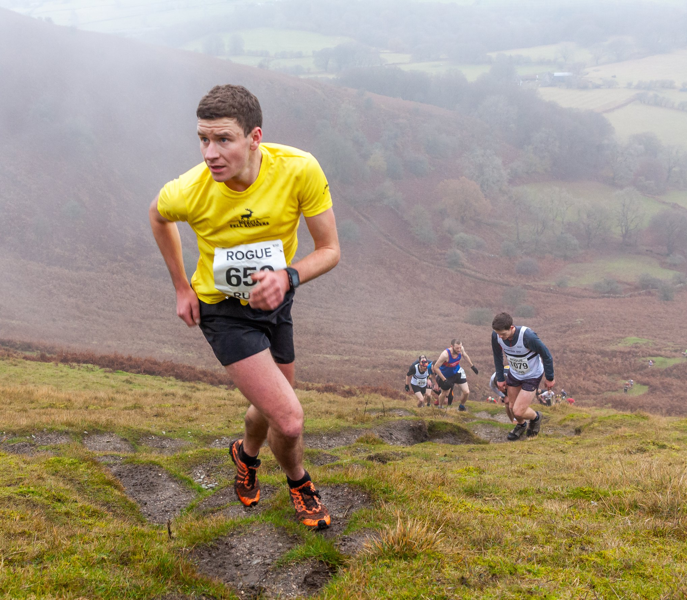

Information
Distance - 5.7km
Elevation gain - 478m
Date - 30th November 2024
Time - 2pm start
12:30 registration
Venue - Llanfoist Village Hall
Address - Church Lane
Abergavenny
NP7 9LP
///nightfall.apprehend.rolled
Cost - £5.50
Minimum age - 16
Welcome to The Blorenge, where the spirit of fell running meets the thrill of conquering untamed landscapes. If you're already familiar with the exhilaration of navigating rugged terrain and crave the rush of challenging ascents and descents, this is the event for you.
